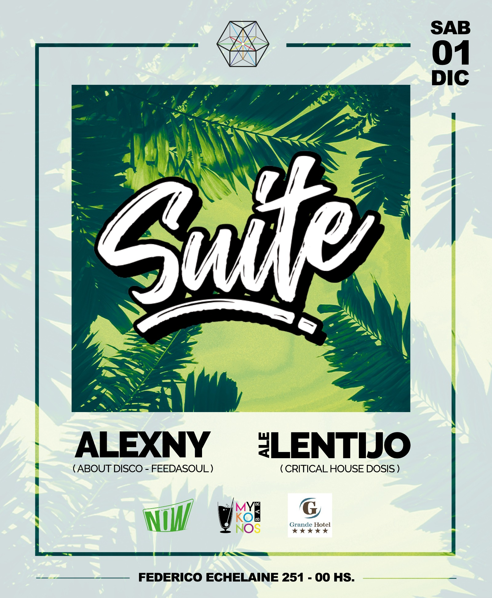
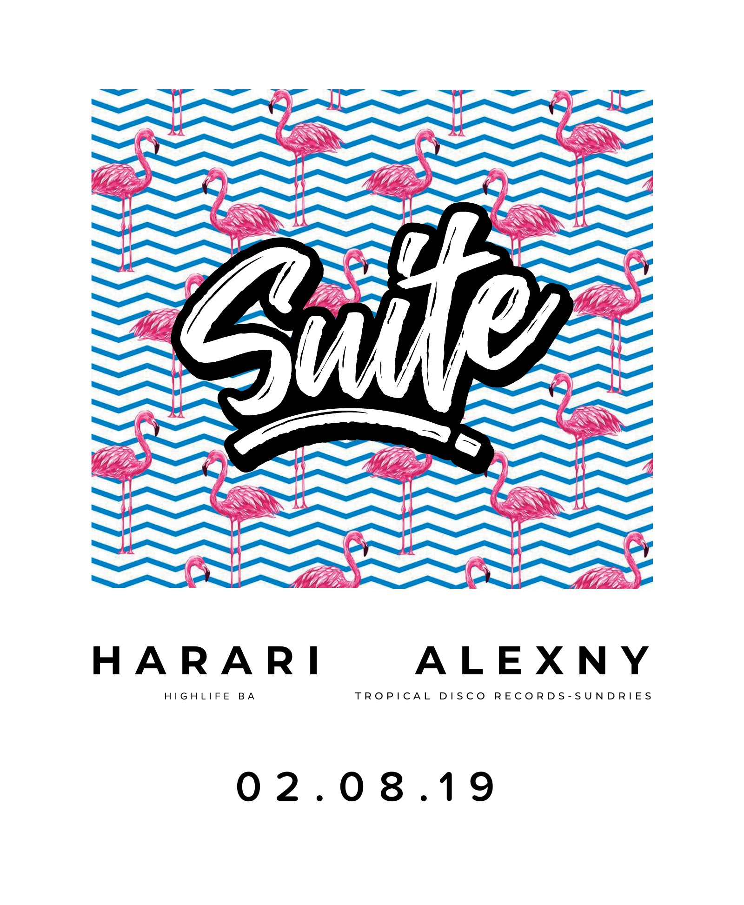
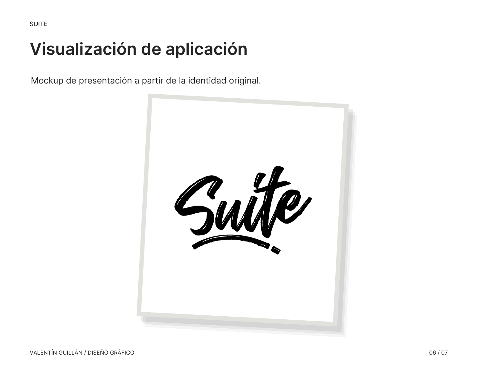

Logo · Flyers · Animación
Suite
Logo, flyers y animaciones para un ciclo de fiestas.
Explorar el proyectoEl proyecto
Una firma en
distintas fechas.
La selección recorre el logotipo y piezas de distintas fechas: flyers, páginas de la presentación del ciclo y una animación original.
- Cliente
- Suite
- Diseño
- Valentín Guillán
- Participación
- Diseño de logo, flyers y animaciones
Desarrollo visual
Una firma, distintas fechas
El logo se mantiene en piezas con imágenes, colores y composiciones diferentes.


Desarrollo visual
Suite 4to
Dos composiciones del archivo original para la misma fecha.


Desarrollo visual
Otra composición del ciclo
El logo firma una pieza con un patrón de flamencos.

Desarrollo visual
La presentación del ciclo
Portada y página de contexto de la presentación original de Suite.


Desarrollo visual
Una pieza en movimiento
Animación original de Suite, conservada del archivo del proyecto.
Visualización de aplicación: Suite

Participación y créditos
Suite
Diseño de logo, flyers y animaciones: Valentín Guillán.
Fotografías de la presentación: archivo original de Suite.